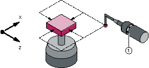
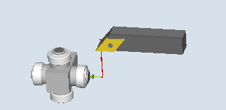
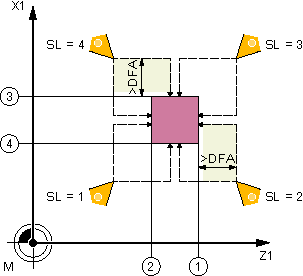
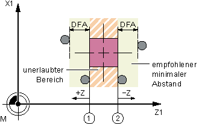

Mit dieser Messvariante kann ein Werkzeugmesstaster abgeglichen (kalibriert) werden. Mit Hilfe des Kalibrierwerkzeugs werden die aktuellen Abstandsmaße zwischen Maschinen- bzw. Werkstücknullpunkt und Messtaster-Triggerpunkten ermittelt.
Es wird ohne Erfahrungs- und Mittelwert gerechnet.
| Hinweis |
|
Steht kein spezielles Kalibrierwerkzeug zur Verfügung, kann ersatzweise ein Drehwerkzeug mit den Schneidenlagen 1 bis 4 für die Kalibrierung von 2 Seiten des Messtasters verwendet werden. |
Das Kalibrierwerkzeug ist so geformt (abgewinkelt), dass mit diesem der Werkzeugmesstaster von allen 4 Seiten kalibriert werden kann.
Bei der Verwendung eines Drehwerkzeugs bzw. Kalibrierwerkzeug vom Typ 725 kann der Messtaster nur von 2 Seiten kalibriert werden.
|  |  |
Werkzeugmesstaster mit Kalibrierwerkzeug kalibrieren | Werkzeugmesstaster mit Drehwerkzeug kalibrieren |
Die Positionierung des Kalibrier- bzw. Drehwerkzeugs zum Messtaster erfolgt durch den Zyklus. Mit einem Zyklusaufruf wird die Schaltposition in der angegebenen Messachse und Messrichtung kalibriert.
Die Längen 1 und 2 und der Radius des Kalibrier- bzw. Drehwerkzeugs müssen genau bekannt und in einem Werkzeugkorrekturdatensatz hinterlegt sein.
Diese Werkzeugkorrektur muss bei Aufruf des Messzyklus aktiv sein.
Zum Kalibrieren kann ein Referenz-Drehwerkzeug vom Typ 5xy mit exakt bekannter Geometrie oder ein Kalibrierwerkzeug Typ 585 oder Typ 725 verwendet werden (Typ 580 3D Messtaster Drehen ist nicht verwendbar).
Das Kalibrieren mit Kalibrier- bzw. Drehwerkzeug ist mit den Schneidenlagen 1 bis 4 möglich.
Die Seitenflächen des Messtasterwürfels sind parallel zu den Maschinenachsen Z1, X1 (Achsen der Ebene) auszurichten.
Die ungefähren Positionen der Schaltfläche des Messtasters bezüglich Maschinen- bzw. Werkstücknullpunkt sind vor Kalibrierbeginn in den allgemeinen Settingdaten einzutragen.
Weitere Informationen: Inbetriebnahmehandbuch SINUMERIK Operate
Diese Werte dienen zum automatischen Anfahren an den Messtaster mit dem Kalibrierwerkzeug und dürfen im Betrag nicht mehr als der Parameterwert TSA vom Istwert abweichen.
Der Messtaster muss innerhalb des Gesamtweges 2 · DFA erreicht werden.
Schneidenlage 1 bis 4 und passende Anfahrpositionen für beide Achsen (maschinenbezogen) | |
① | Triggerpunkt der 1. Messachse in negativer Richtung (allgemeines SD54625 $SNS_MEA_TP_TRIG_MINUS_DIR_AX1) |
② | Triggerpunkt der 1. Messachse in positiver Richtung (allgemeines SD54626 $SNS_MEA_TP_TRIG_PLUS_DIR_AX1) |
③ | Triggerpunkt der 2. Messachse in negativer Richtung (allgemeines SD54627 $SNS_MEA_TP_TRIG_MINUS_DIR_AX2) |
④ | Triggerpunkt der 2. Messachse in positiver Richtung (allgemeines SD54628 $SNS_MEA_TP_TRIG_PLUS_DIR_AX2) |
Werkzeugmesstaster mit Kalibrierwerkzeug kalibrieren
Schneidenlage 1 bis 4 und passende Anfahrpositionen für beide Achsen (maschinenbezogen) | |
① | Triggerpunkt der 1. Messachse in negativer Richtung (allgemeines SD54625 $SNS_MEA_TP_TRIG_MINUS_DIR_AX1) |
② | Triggerpunkt der 1. Messachse in positiver Richtung (allgemeines SD54626 $SNS_MEA_TP_TRIG_PLUS_DIR_AX1) |
③ | Triggerpunkt der 2. Messachse in negativer Richtung (allgemeines SD54627 $SNS_MEA_TP_TRIG_MINUS_DIR_AX2) |
④ | Triggerpunkt der 2. Messachse in positiver Richtung (allgemeines SD54628 $SNS_MEA_TP_TRIG_PLUS_DIR_AX2) |
Werkzeugmesstaster mit Drehwerkzeug kalibrieren
Das Anfahren an den Messtaster wird vom Zyklus übernommen.
Das Kalibrier- bzw. Drehwerkzeug steht um den Messweg gegenüber der Messfläche.
① | Triggerpunkt der 1. Messachse in positiver Richtung (allgemeines SD54626 $SNS_MEA_TP_TRIG_PLUS_DIR_AX1) |
② | Triggerpunkt der 1. Messachse in negativer Richtung (allgemeines SD54625 $SNS_MEA_TP_TRIG_MINUS_DIR_AX1) |
Position nach Messzyklus-Ende, Beispiel 1. Achse der Ebene (bei G18: Z)